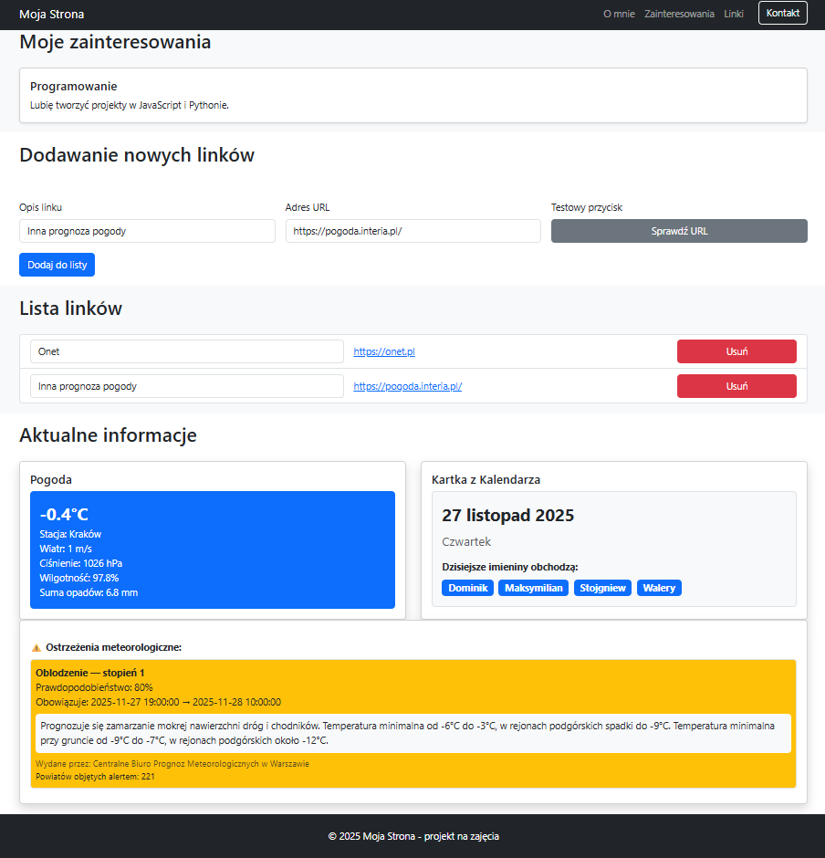

Projekt – Etap 2
JavaScript
Celem drugiego etapu projektu jest uzupłenienie przygotowanej na poprzednich zajęciach, strony osobistej
z wykorzystaniem JavaScriptu.
Na tym etapie dodajemy interaktywne elementy i dynamiczne dane pobierane z bezpłatnego API.
🎯 Cele Etapu 2 - Zajęcia 6
- Rozbudowanie strony osobistej o elementy JavaScript.
- Dodanie trybu ciemnego.
- Dodanie treści kartki z kalendarza.
- Wypełnienie sekcji „Pogoda”.
- Dodanie nowej sekcji umożliwiającej dodawanie linków.
📁 Pliki dostarczone na start
- utils.js – moduł zawierający funkcje do wykorzystania w projekcie: sprawdzenie URL, obsługa localStorage.
- main.js – główny skrypt uruchamiający aplikację, w którym importujemy i wywołujemy funkcje z opracowanych na zajęciach modułów.
✅ Wymagania szczegółowe
-
Założenia ogólne:
- Modyfikacje DOM wykonać z wykorzystanie metod JS: createElement oraz append. Nie używać innerHTML.
- Link do skryptu main.js w pliku HTML dodajemy w sekcji
head z atrybutem type="module" oraz defer.
- Zrealizować wymaganiia projektu rozbijając logikę na moduły: weather.js, warnings.js, namedays.js, links.js.
- Zapewnić, że wszystkie moduły działają poprawnie po zaimportowaniu.
-
Dodanie trybu ciemnego:
- Umieścić pod paskiem nawigacji przycisk "Tryb: jasny/ciemny"
- Utworzyć funkcję JavaScript przełączającą tryb.
- Zapisać preferencję użytkownika w localStorage.
-
Uzupełnienie sekcji „Pogoda”.
- Skorzystać z bezpłatnego API Open-Meteo (https://danepubliczne.imgw.pl/api/data/synop/station/${city}).
- Pobrać i wyświetlić aktualną temperaturę oraz prognozę na dziś. Podaj: nazwę stacji, Wiatr, Ciśnienie., Wilgotność, Sumę opadów.
- Ewentualnie dodać ikonę pogody odpowiednią do warunków atmosferycznych.
- Dane pogodowe powinny być odświeżane co 30 minut.
-
Rozbudowanie sekcji „Kartka z Kalendarza”.
- Wyświetlić datę oraz dzień tygodnia.
- Skorzystać z API do pobrania informacji o imieninach (https://nameday.abalin.net/api/V2/today?timezone=UTC)
- Pobrać i wyświetlić kto obchodzi imieniny.
- Imiona wyświetlić z wykorzytstaniem komponentu "badge" Bootstrap.
-
Rozbudowanie sekcji „Aktulanie informacje” o kafelek wyświetlający ostrzeżenia meteorologiczne.
- Skorzystać z bezpłatnego API Open-Meteo (https://danepubliczne.imgw.pl/api/data/warningsmeteo).
- Pobrać i wyświetlić ostrzeżenia meteorologiczne.
- Wyświetlić wszystkie pobrane z API informacje.
- Podać liczbę powiatów objętych ostrzeżeniami (wielkość tablicy o kluczu "teryt").
- Jeśli brak ostrzeżeń, wyświetlić odpowiedni komunikat.
-
Dodanie nowej sekcji "Dodawanie nowych linków".
- Pod sekcją "Moje zainteresowania" dodaj nową sekcję z listą linków.
- Utwórz formularz z polem tekstowym dla opisu linku oraz polem typu url dla podania adresu.
- W tym samym formularzu dodaj przycisk (typu "button") "Sprawdź URL".
- Przycisk "Sprawdź URL" powinien sprawdzać czy URL jest poprawny; wykorzystaj funkcję z pliku utils.js.
- Pod formularzem umieść przycisk "Dodaj do listy".
- Po kliknięciu przycisku "Dodaj do listy", dodaj wprowadzone dane do listy wyświetlanej poniżej.
- Każdy link na liście powinien być klikalny i otwierać się w nowej karcie.
- Walidacja formularza przeprowadzona przy dodawaniu do listy. Sprawdzić należy: opis linku min. 3 znaki, poprawny URL (inputURL.checkValidity()).
-
Dodanie nowej sekcji "Lista linków".
- Bezpośrednio pod sekcją "Dodawanie nowych linków" utwórz kolejną sekcję z listą linków.
- Każdy element na liście zawiera wprowadzone dane: opis linku oraz link, który powinien być klikalny i otwierać się w nowej karcie.
- W tej samej linii wraz z danymi dodać przycisk "Usuń" do usuwania linku z listy.
- Lista powinna być dynamicznie aktualizowana po dodaniu lub usunięciu linku.
🖼️ Przykładowy wygląd wynikowej strony:

🏠 Praca domowa
- Dokończ stylowanie całej strony.
- Upewnij się, że strona jest w pełni responsywna.
- Zapisz listę linków w localStorage i załaduj je przy starcie strony.